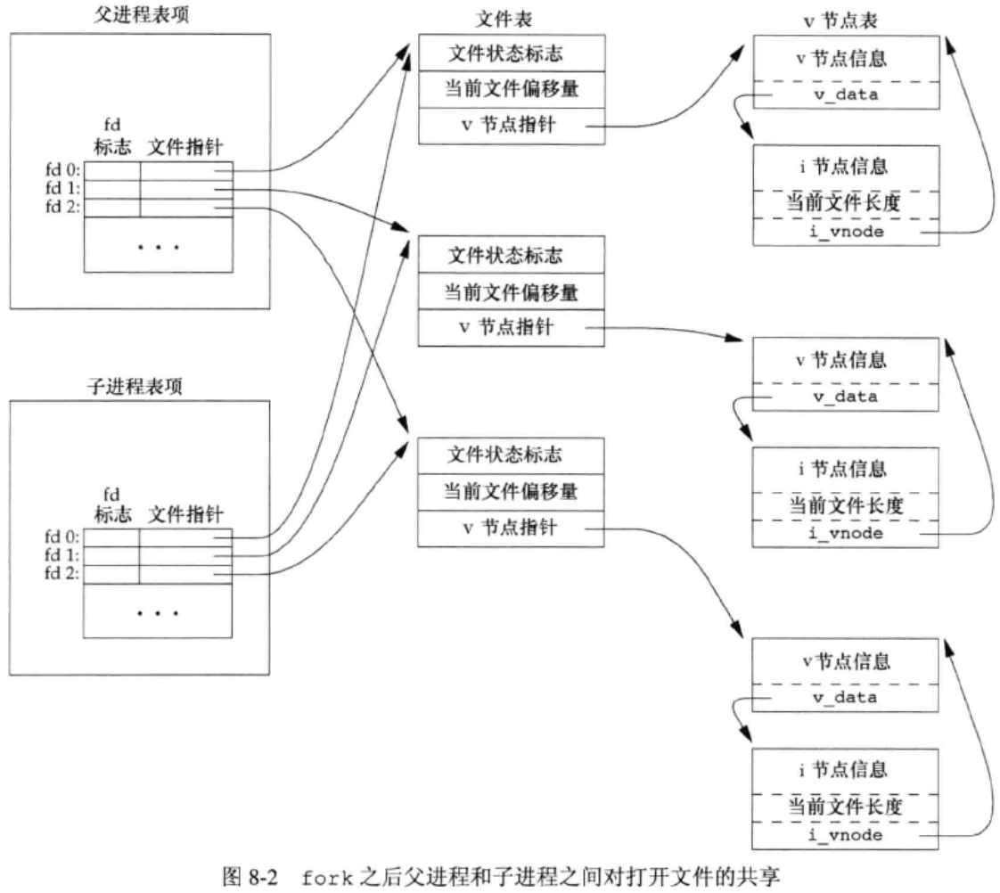
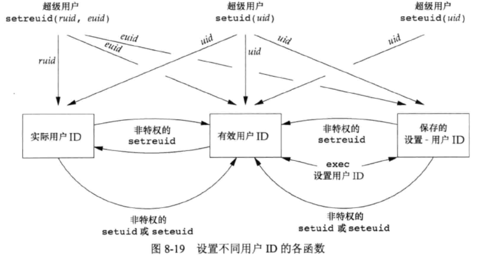

《Unix 环境高级编程》
第7章 进程环境
main函数
- 内核执行c程序时，使用一个exec函数，在调用main函数前先调用一个特殊的启动例程，可执行文件将该启动例程的地址作为程序的起始地址。启动例程从内核获取命令行参数和环境变量值，为调用main函数做好安排。
进程终止
- 正常终止：从main返回；调用exit；调用_Exit或_exit；最后一个线程从启动例程返回；最后一个线程调用pthread_exit。
- 异常终止：调用abort；接收信号；最后一个线程对取消请求响应。
- main函数中调用
exit(0);等价于return(0);
- $? is used to find the return value of the last executed command.
int atexit(void (*func)(void)); 可登记exit handler，至多32个。登记的函数由exit自动调用，调用顺序与登记顺序相反。同一函数登记多次就会被调用多次。
存储空间分配
- malloc 分配指定字节数的存储区，存储区内初始值不确定。
- calloc 为指定数量指定长度的对象分配存储空间，空间内每个bit初始化为0。
- realloc 增加或减少以前分配区的长度。增加长度时可能将原先分配区的内容移到另一个足够大的区域，新增区域初始值不确定。
setjmp, longjmp
int setjmp(jmp_buf env);若直接调用返回0；若从longjmp返回，则为非0。void longjmp(jmp_buf env, int val);- 非局部goto，跳转之后会抛弃中间的栈帧。
- 自动变量在跳转后不想让值回滚就设置为volatile，声明为全局变量和静态变量的值在longjmp前后保持不变。其他不确定，但大多数实现不将值回滚。
第8章 进程控制
进程标识
- 0号进程是交换进程，该进程是内核的一部分，它并不执行任何磁盘上的程序，因此也被成为系统进程。
- 1号进程是init进程，init进程绝不终止，它是一个普通的用户进程，但以root特权运行。它是所有孤儿进程的父进程。每个pid namespace中的1号进程终止后，内核都会发信号杀死该namespace的其余进程。
fork, vfork
- fork: 调用一次返回两次，父子进程执行顺序不确定，子进程使用copy-on-write，父子进程的fd指向同一文件表且共享同一文件偏移量。
- 
- vfork: vfork保证子进程先运行，在它调用exec或exit之后父进程才可能被调度运行，在子进程调用这两个函数中的任意一个时，父进程会恢复运行。当然如果在调用这两个函数之前子进程依赖于父进程的进一步动作，就会导致死锁。
- vfork在调用exec或exit之前，它在父进程的空间中运行（比copy-on-write效率高）。如果子进程修改数据或进行函数调用或没有调用exec/exit就返回可能会带来未知的结果。
exit
- 正常终止：从main返回；调用exit；调用_Exit或_exit；最后一个线程从启动例程返回；最后一个线程调用pthread_exit。
- 异常终止：调用abort；接收信号；最后一个线程对取消请求响应。
- 只有exit会调用atexit函数注册的handler。
- 在任意一种情况下，终止进程的父进程都能调用wait或waitpid函数取得终止状态。说明内核为每个终止子进程保存了一定量的信息，父进程调用wait或waitpid函数时可以得到这些信息。内核可以释放终止进程所使用的所有缓存区，关闭其所有打开的文件。
- 一个已经终止但是父进程尚未对其进行善后处理（获取终止子进程的有关信息、释放它仍占用的资源）的进程被称为僵死进程（zombie），ps将僵死进程的状态打印为Z。
- 被init进程收养的进程终止时不会变成僵死进程，因为init被编写成无论何时只要有一个子进程终止，init就会调用一个wait函数取得其终止状态，这样就防止了在系统中塞满僵死进程。
exec
- exec不创建新的进程，只是用磁盘上的一个新程序替换了当前进程的text节,data节,stack和heap。
- 7种不同的exec函数：
execl，execv，execle，execve，execlp，execvp，fexecve。
- l: list all args
- v: args vector
- e: add env vector
- p: 使用PATH环境变量，查找第一个包含名为filename的可执行文件的路径名前缀。
- execve是真正的系统调用。
用户id, 组id
- 
- 设计应用时总是以最小特权（least privilege）模型。程序应当只具有为完成给定任务所需的最小特权。
第9章 进程关系
进程组
- 每个进程组有一个组长进程，组长进程的进程组ID等于其进程ID。
- 进程组组长可以创建一个进程组，创建该组中的进程，然后终止。只要某进程组中有一个进程存在该进程组就存在，与组长进程是否终止无关。
- 一个进程只能为它自己或子进程设置进程组ID。在她的子进程调用exec之后就无法更改子进程的进程组ID。
会话
- 会话（session）是一个或多个进程组的集合。
pid_t setsid(void);若成功，返回进程组ID，否则返回-1
- 调用该函数的进程首先不能是一个进程组的组长。此时：
- 该进程成为新会话的会话首进程。
- 该进程成为一个新进程组的组长进程。
- 该进程没有控制终端。如果之前有一个控制终端，则该联系被切断。
- new session ID = new process group id = process id
控制终端
- 一个会话可以有一个控制终端。
- 建立与控制终端连接的会话首进程称为控制进程。
- 一个会话中的几个进程组被分为一个前台进程组和一个或多个后台进程组。
- 若一个会话有一个控制终端，则他有一个前台进程组，其他进程组为后台进程组。
- 键盘上的中断或退出信号会发送给前台进程组的所有进程。
- 登录时会自动建立控制终端。
Copyright Notice: All articles in this blog are licensed under CC BY-NC-SA 4.0 unless stating additionally.